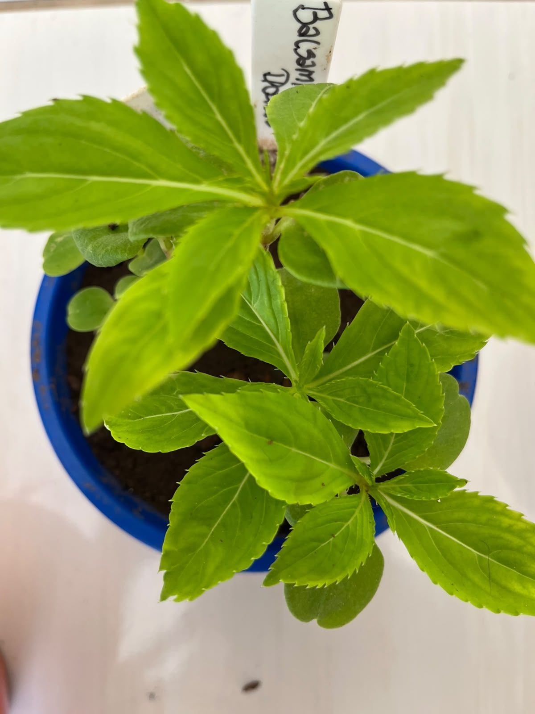
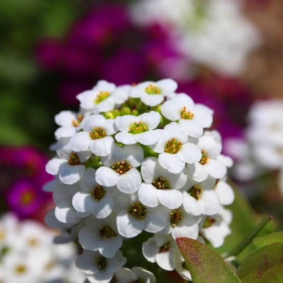

🌼 Margarida Grande
Flores brancas com centro amarelo que atraem polinizadores e deixam a horta mais bonita.
Conhecer Planta


🌼 Calêndula
Flor ornamental conhecida por suas cores vibrantes e importância ecológica.
Conhecer Planta
🌸 Crisântemo Dobrado
Flor ornamental que apresenta pétalas numerosas e beleza especial.
Conhecer Planta
🌺 Balsâmica Dobrada
Planta de flores delicadas muito utilizada em jardins.
Conhecer Planta
🌿 Flor de Mel
Pequenas flores perfumadas que atraem insetos polinizadores.
Conhecer Planta

🌺 Fricoide Sortido
Planta ornamental suculenta com flores coloridas e adaptada a ambientes ensolarados.
Conhecer Planta
🌿 Sálvia Farinhenta
Flor ornamental que contribui para a biodiversidade e atrai polinizadores.
Conhecer Planta